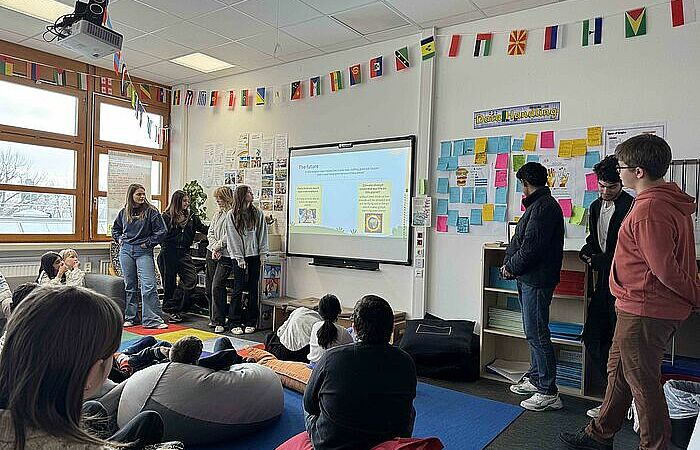
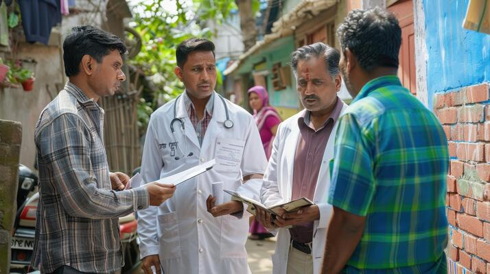
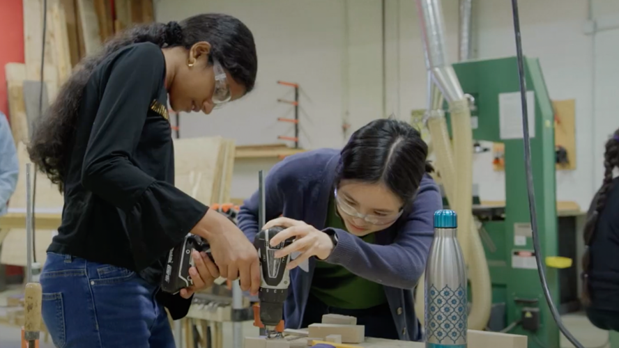
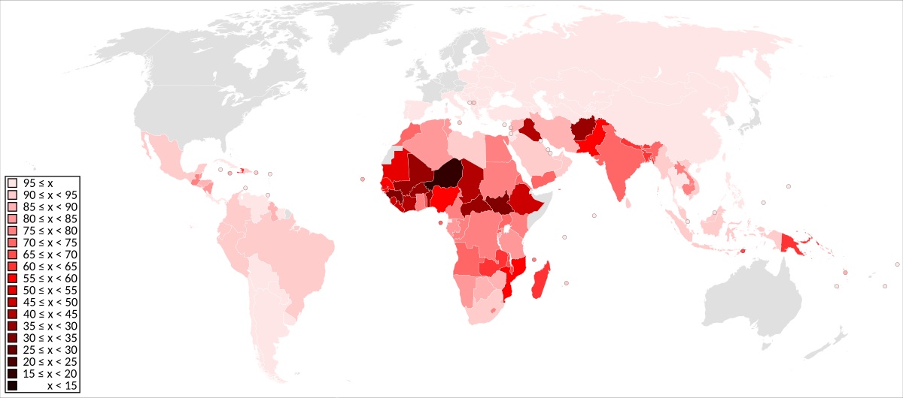
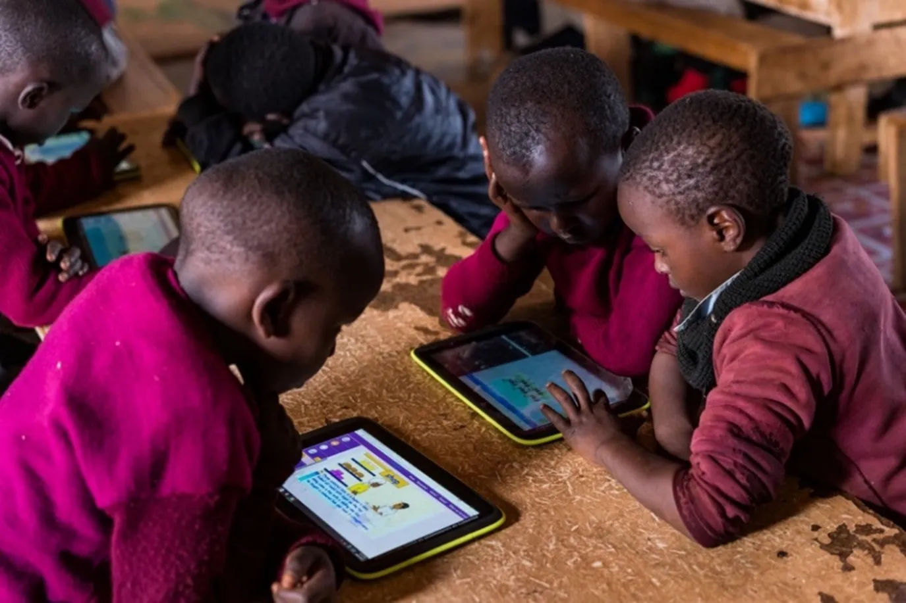

Introduction
Education is the foundation of sustainable development. It empowers individuals, strengthens economies, and promotes social well-being. A well-educated society is better equipped to tackle global challenges such as poverty, inequality, and climate change.

Without education, progress is limited. It is essential for creating job opportunities, improving health, and fostering innovation. This article explores why education is crucial for global development and highlights its impact on poverty eradication, equality, and sustainability.
Education is not just about learning; it's about empowering individuals to create positive change in their communities and the world.
Why Education is Essential for Global Development
Education plays a vital role in shaping the future of individuals and nations. It provides people with the skills and knowledge needed to improve their lives and contribute to society.
Economic Growth
One of the biggest benefits of education is economic growth. Educated individuals can secure better jobs, increasing their income and reducing poverty. Countries that invest in education experience higher productivity and economic stability.
Health and Well-being
Education also improves health and well-being. People with access to education make informed decisions about hygiene, nutrition, and medical care. This leads to lower disease rates and higher life expectancy.

Peace and Stability
Additionally, education promotes peace and stability. It encourages critical thinking, tolerance, and respect for different perspectives. Societies with higher education levels tend to have lower crime rates and stronger democratic values.
The Role of Education in Eradicating Poverty and Inequality
Education is one of the most effective tools for breaking the cycle of poverty. When children receive quality education, they have better job prospects, lifting themselves and their families out of hardship.
Gender Equality
Gender equality is another major benefit of education. When girls are educated, they gain the confidence and skills to participate in decision-making, workforce leadership, and community development. Studies show that increasing girls' education leads to lower child mortality rates and reduced early marriages.

Bridging Social Gaps
Moreover, education bridges social gaps. It ensures that children from all backgrounds, regardless of income or social status, have equal opportunities to succeed. This helps create a more just and fair society.
When we educate a child, we empower not just an individual, but an entire generation.
Global Literacy Rates and Education Statistics
Despite the importance of education, millions of people worldwide still lack basic literacy skills. According to UNESCO, around 773 million adults cannot read or write.
Current Challenges
In many developing countries, 1 in 5 children is out of school due to poverty, conflicts, or lack of resources. The gender gap in education is also a concern, with girls in some regions facing cultural and financial barriers to schooling.

Economic Impact
Studies show that nations investing in education experience up to a 10% increase in GDP per capita over time. Additionally, educating girls leads to better health outcomes, with educated mothers more likely to ensure their children receive proper nutrition and healthcare.
Case Studies of Successful Education Initiatives
Around the world, innovative education programs are making a significant difference in communities. Here are three notable examples:
Finland's Education Model
Finland is known for its world-class education system. Instead of focusing on standardized testing, it promotes creativity, problem-solving, and student well-being. The country consistently ranks among the highest in global education performance.
Kenya's Digital Learning
In Kenya, the government introduced a tablet-based learning program for rural schools. This initiative has improved access to educational resources, increasing student engagement and literacy rates.
Bangladesh's BRAC Program
The BRAC Education Program in Bangladesh provides low-cost, community-based schools for underprivileged children. This initiative has successfully educated millions of students, especially girls, giving them better opportunities for the future.

Conclusion
Education is a key driver of sustainable development. It helps eradicate poverty, promotes equality, and builds stronger, healthier societies. Investing in education today will create a brighter future for generations to come.
Governments, NGOs, and global organizations must work together to make quality education accessible to all. When we educate individuals, we empower communities—and ultimately, we transform the world.
The path to sustainable global development begins with accessible, quality education for all.